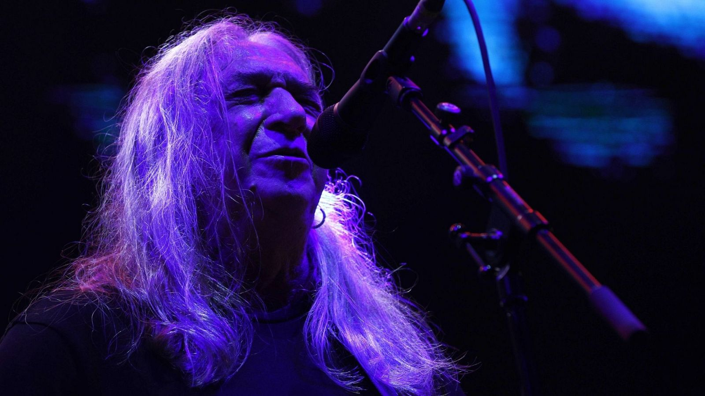
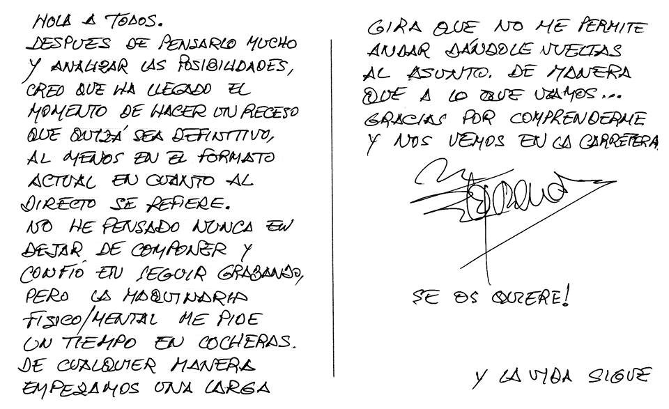
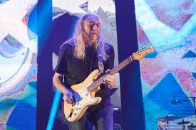
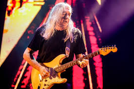
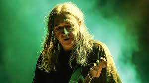
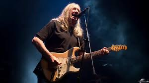
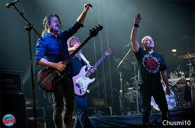
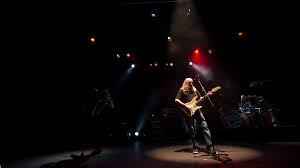

Concierto en Bilbao
15 de diciembre de 2018 — Bizkaia Arena (BEC!)
Detalles del evento
| Concepto | Información |
|---|---|
| Aforo | 18.000 personas |
| Precio de las entradas | 35 € |
| Fecha y hora del concierto |

Crónica
En el Bizkaia Arena (BEC!), Rosendo desató una tormenta de rock urbano puro. Bilbao, siempre territorio de gente de verdad, respondió con la misma intensidad: gritos, guitarras encendidas y un sentimiento de hermandad que convirtió esa noche en una de las más memorables del adiós.
El segundo concierto de la gira de despedida tuvo lugar el 15 de diciembre de 2018, apenas un día después del emotivo arranque en A Coruña. Las 18.000 personas que llenaron el Bizkaia Arena fueron testigos de un espectáculo inolvidable.
Rosendo salió al escenario acompañado por Rafa J. Vegas al bajo y Mariano Montero a la batería. El País Vasco siempre ha tenido una conexión especial con el rock de Rosendo, y esa noche quedó patente.

La noche fue un repaso exhaustivo por toda su carrera: desde los tiempos de Leño
con temas como Maneras de vivir
y El porqué de tus silencios
, hasta sus grandes clásicos
en solitario como Flojos de pantalón
, Loco por incordiar
y Agradecido
.
El público bilbaíno demostró por qué el País Vasco es territorio rockero. Cada tema fue coreado, cada riff celebrado. Fue una noche de celebración pura del rock urbano español.
Ubicación
Galería del concierto






"Bilbao siempre ha sido territorio de gente de verdad." — Rosendo Mercado